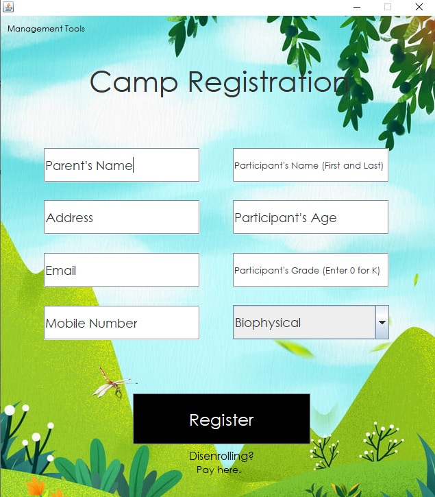
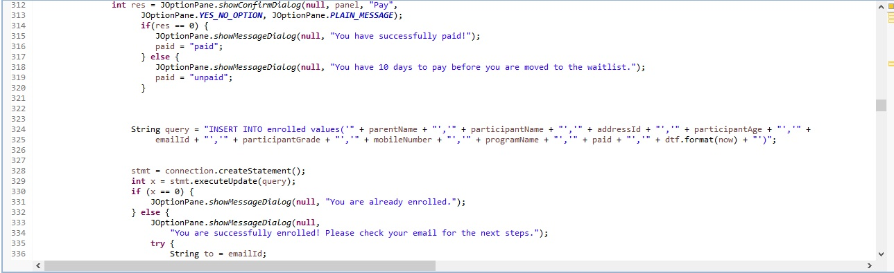

McKenzie McPeek
I'm an Ohio based web designer & software developer that is focused on creating modern user interfaces and websites that utilize clean code.
Portfolio
Below you can see a few of my projects that I have either completed or am in the process of working on. In addition to these projects, I have countless other ones completed for class assignments.
Recipe Application
I designed this application for practice and for my own personal use. I used Java, Java Swing, and MySQL. It is a recipe application with a user registration page, login page, home page, and other pages to convert measurements, add recipes, view saved recipes, and calculate the total amount of each ingredient needed based on which recipes you select. I used Eclipse for the Java portion, and MySQL Workbench to authenticate the users, as well as to load each user's saved recipes.
*Additional code sample available upon request.
Camp Registration System
I designed this application for my final software engineering project. I used Java, Java Swing, and MySQL. It is a camp registration system that allows campers to enroll for 4 different camp programs, placing 16 campers in each program. When the camper enrolls, they either choose to pay now or later. If they choose later, they have 10 days to return to the application and pay before they are moved to the waitlist. All enrolles receive an automatic email of the next steps. If a camper tries to enroll and the limit is reached, they are asked if they wish to be placed on the waitlist, and they receive an email as well. The system allows for campers to disenroll, and when one does, a camper is pulled from the waitlist, emailed, and moved to the active list. If a camper doesn't pay within 10 days and are moved to the waitlist, then a camper on the waitlist is notified that they are now actively enrolled and can pay. This ensures that there are always 16 active campers in each program, and automatic emails are sent out whenever a change is made to the camper's enrollment status. Camp management has an option to receive an email report of all the active and paid campers with their contact information, as well as sending an automatic email to campers in each program telling them who their partner is. I used Eclipse and MySQL Workbench for this project.
 *Additional code sample available upon request.
J&J Swap Shop Desktop Website
I am currently in the process of designing a desktop website for J&J Swap Shop in New Philadelphia, Ohio.

Internship Mock-Up
In 2018, I designed this mock-up website for an intership that I had applied for. I ultimately chose to accept my current job over this internship, but this website helped me gain a deeper understanding for design and forms.

Skills
I have experience coding in the following languages:
- Java
- Java Swing
- HTML
- CSS
- Python
- SQL
- Visual Basic
- Javascript
- JQuery Mobile
- C++
I have the most experience in Java, Javascript, MySQL, HTML, and CSS. I've taken a few different classes where I learned HTML and CSS, and I've also coded websites on my own in these languages. I've taken courses that taught Java, Javascript, Python, Visual Basic, C, C++, and SQL. In addition to these courses, I've also coded projects on my own to gain additional experience. Finally, I'm in the process of obtaining my Oracle Java Programmer's Certificate.
Along with programming languages, I also have computer technology skills from a lifetime of troubleshooting mine and my family's problems. In 2017, I had an internship where I worked at a school district in their IT department.
About Me
I'm 21 years old, from Ohio, and have been married for three years. Outside of coding and school, I enjoy spending time with my husband, dog, and my friends. I also enjoy going to the gym, running, reading, and travelling. I graduated in May 2020 with my Bachelor's Degree in Computer Science, and I am remotely attending Georgia Tech this upcoming fall to get my Master's Degree in Computer Science.
LET'S WORK TOGETHER!
If you liked my work and portfolio, please email me or contact me through any of the social media sites listed below.